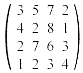

Matematicko programiranje
20.04.'96.
1. Resiti problem:
(min) x + 2y - t,
p.o. x - y + 3z = 1, 2x - 4z + 2t = 2, 3x + y + z + 4t = 7, x,y,z,t ³
0.
2. Dato je 6 radnika i tri posla. Poznata je matrica (aij) produktivnosti radnika j po poslu i:
| 1 | 2 | 3 | 4 | 5 | 1 |
| 2 | 3 | 4 | 5 | 1 | 2 |
| 3 | 4 | 5 | 1 | 2 | 3 |
Rasporediti po dvojicu radnika na jedan posao tako da ukupna produktivnost bude najveca.
3. Resiti problem:
(min) 2(x/z) + 3x + (1/y),
p.o. (y/x) + (1/x) £ 1, x £
1, xz £ 1, x,y,z > 0.
4. (N-smer) Resiti Rozenovom metodom polazeci
iz tacke (2,3) problem:
(min) 2x² + xy + y²
p.o. 5x + 3y ³ 8, 11x + 8y £
46, x,y ³ 0.
4. (V-smer) Odrediti strategije oba igraca sledece matricne igre: 